LINKS
October 20, 2019
An article by Sergey Matrosov
Two things to consider before we start: it has English interface and it’s crucial to use mostly Russian keywords. So, let’s go. Advertising on Yandex is very similar to Google. In fact, if you have worked with Google Ads, you can be sure that you’ll be fine with Yandex. In the main, there are only slight differences in the interfaces, that’s all.
The features of Yandex Search are pretty recognizable: ads with the highest performance indicators come out on top of the search results. The performance indicators are CTR, quality coefficient and click bid. Yandex claims that quality coefficient takes many factors into account such as ad and landing page relevance. It is very important to keep in mind that Direct shows ads on Search and Display (YAN) simultaneously by default. If you want to show your ads only on Search, this can be organized in Campaign Settings in the Strategy section.
One of the main differences it has with the Google Ads interface is that you do not buy a position, but daily traffic, which is based on the position of ads:
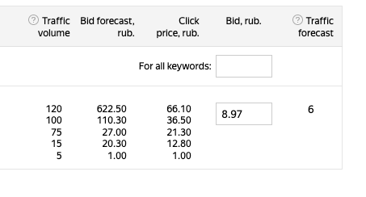
Ads formats: In Search, there are standard text-only ads, dynamic ads based on feeds for e-commerce businesses, ads adapted for mobile devices (if ads are going to be shown on mobile devices, they have priority over standard ads in auctions) and search banners, as shown below. The main feature of the latter is that the page displays one banner, so it gets all the attention you expect from display media.
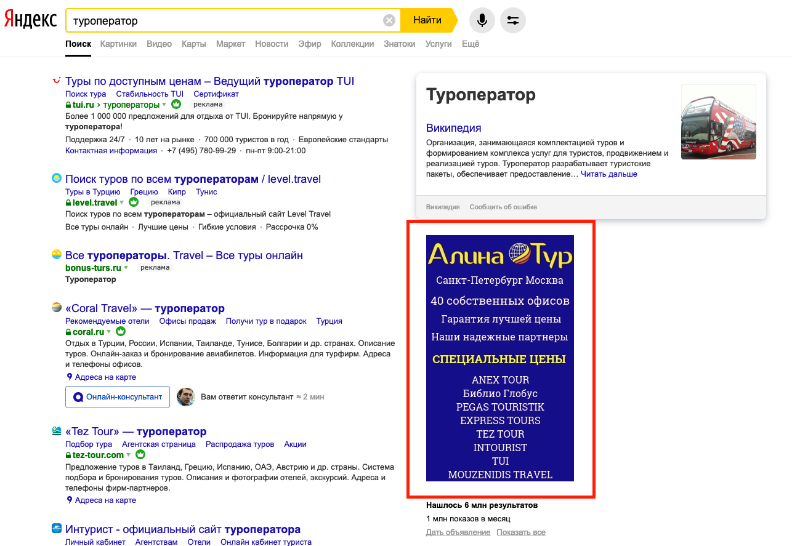
Of course, search ads in Yandex have site links (up to eight, but only if you receive 100 daily clicks for this ad), callouts, prices and call extensions. It also has an online consultant feature, which is easily integrated via Yandex.Dialogs.
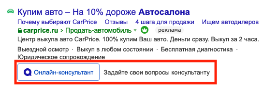
The YAN is similar to the Google Display Network, in that it is designed for placing ads on Yandex services and partner sites as well as partner ad exchanges. It has access to its audience via more than 40,000 sites, including websites, mobile apps, smart TV apps, and even digital outdoor advertising. Reminder: if you want to show you ads only on the YAN, this could be arranged in Campaign Settings in the Strategy section.
On the YAN, the types of ads include: standard text ads, text ads with images and text ads with video, as well as special features, such as banners on the homepage of Yandex Search. Yandex uses the following standard formats: HTML5, GIF, PNG or JPEG.
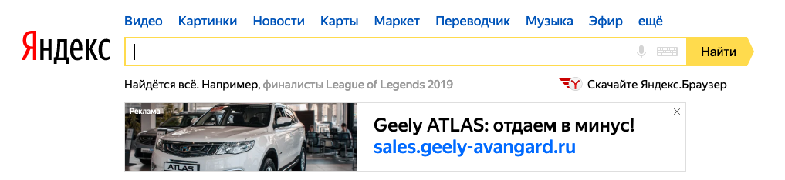
The interesting thing here is that you can make video ads without a professional studio. Yandex accept film clips made using your smartphone or from photos of your products.
Last but not least, you can display a full-screen banner, a small banner or a native ad for mobiles apps.
Special networks of interest:
Audio with audio ads: Audio ads are played between music tracks on Yandex.Radio and Yandex Music, available for both desktop and mobile devices for those who don’t have a subscription. Ads can include images as well.
Outdoor ads: You can reach out to offline audiences, such as vehicle drivers and their passengers. Yandex has agreements with key outdoor advertising operators in Russia. You don’t need much money to start making use of this option, as prices start from as low as 10 US dollars. There is limited access to this option right now, so you need to contact Yandex if this is of interest.
Indoor ads are another way to reach offline audiences in business centers, shopping malls, supermarkets etc. Yandex has the technology to use camera images obtained via digital screens to detect the gender and age so you can make adjustments to the types of ads based on these criteria. There are about 3,500 screens available to meet your service needs across Russia. The minimum budget is also 10 US dollars. No request is needed!
Yandex has several strategies to help advertisers meet their goals: traditional manual bidding, optimizing via clicks, conversions, ROI and installations. All automatic strategies have built-in protection against budget overspending. Remember that, by strategy, Yandex is also referring to where ads are to be displayed (Yandex search results, YAN or both).
Like Google, Yandex forbids the advertisement of such products as weapons, drugs, tobacco, magical services and financial pyramid schemes. The list is pretty extensive. For other groups of products, you may need to have certifications or licenses. In some cases, you need to write a letter of guarantee. Moderation is very strict.
For some products, are warnings and age restrictions such as “There are contraindications. Consult a doctor.” and “18+”. The thing is that, in search ads, these are always displayed automatically, but, in display ads, this has to be done manually, so please be careful.
For goal optimization, you need to implement Yandex.Metrica, which is an analog version of Google Analytics, and set up the goals there (up to 200). The good news is that it is pretty easy to do this via GTM. Here is a small guide:
1. Go to the Metrica application -> add a tag (this will be added as a new account).
2. Click on this new tag -> go to Settings.
3. Put a code snippet of Metrica (from Settings) via a custom HTML tag in GTM.
4. In Settings in Metrica, go to goals -> add goal -> along with a condition type JavaScript event, then name it and give it an ID.
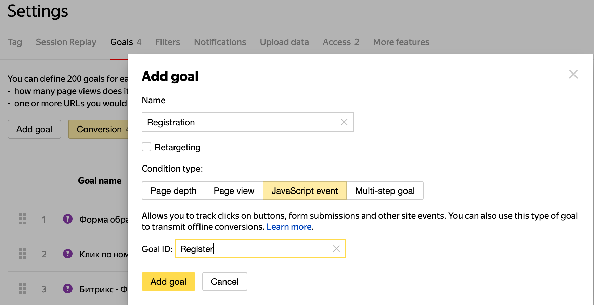
5. In GTM, create a new tag with a custom HTML code and add this code:
<script>
yaCounterYOURMETRICAID.reachGoal(‘Register’);
</script>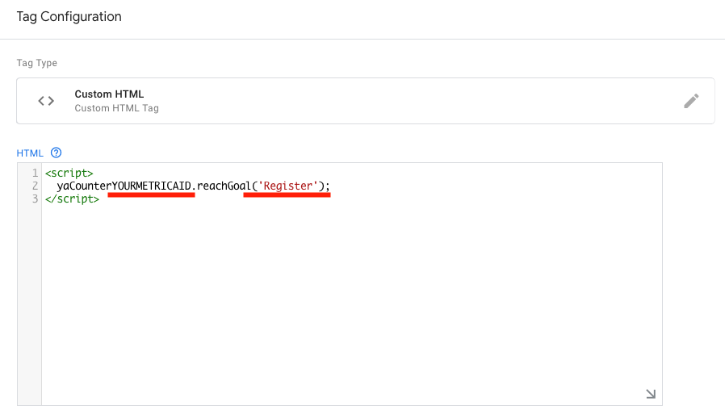
From there, YOURMETRICAID must be changed to the ID for your Metrica tag, while, in the reachGoal method, your Goal ID must be used.
6. Don’t forget the trigger!
The bad news is that you cannot pass specific goal onto Direct. All goals with be automatically added from Metrica to Direct. Nevertheless, it’s not a problem, as you can still optimize and produce reports for a specific goal.
Attribution models: These are well known as first, last and last non-direct clicks. Direct also has a special last click model, whereby, out of all non-direct clicks, only clicks from Direct are counted. Let’s say, a user clicks on an ad in Direct and arrives at your site. This click is attributed as the source of all subsequent sessions and conversions until the user clicks your ad again. By default, Direct uses the last click from the same platform, but you can change it if you want via Strategy in Campaign Settings.
Let’s begin with some sad news: you can’t divide campaigns on desktop, tablet and mobile devices as you can in Google Ads. There is only one device bid adjustment in Campaign Settings (for mobile devices, this is from -50% to +1,200%).
There are also some crucial matters that must be considered before setting up your campaign. So, let’s go to the main part, to Campaign Settings:
1) If you only want to display your ads in Search or only on the YAN, it’s crucial to make proper changes in your Strategy settings, because ads are display on both by default. For example, you want to create a Search-only campaign. To do this, you must choose the right section in Strategy and change the status to “Impressions blocked” in “Settings in ad network”:
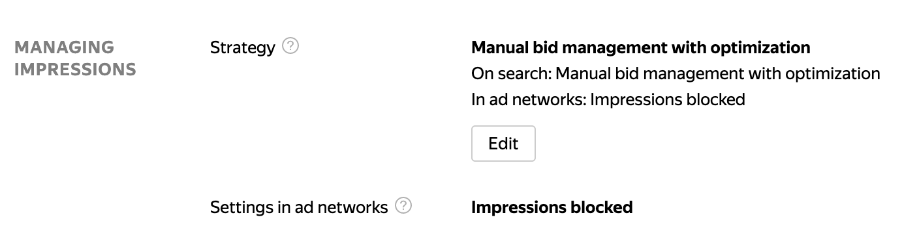
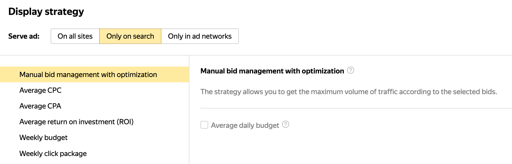
2) Make sure that you didn’t click “Extended geotargeting”:
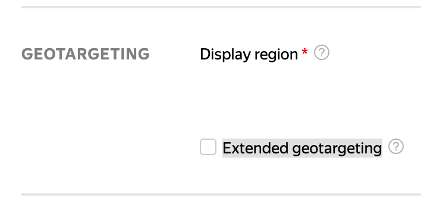
This option is highly specific and allows you to deliver your ads when users carry out searches that include the name of your display region, regardless of their actual location.
3) Turn on the feature “Stop ads when site is not working”.
4) In Special Settings, you can add sites and exchanges for exclusion as well as IPs.
5) In addition, a negative keyword list and a related keywords option are available. The latter refers to keywords which are automatically selected in order to extend the list of keywords set by the advertiser. Based on our experiences, it must be turned off completely. This is because, even if you have a campaign with exact keywords, your ads will appear on some dumb searches that Yandex think is of relevance. If you still want to try this, do so with care, ideally on a 20-30% basis. The only possible case where you would use this is when you want additional traffic and can’t add new keywords (only a low volume) and already enjoy the top positions but have a limited budget. This is a very unlikely scenario.
6) Bid adjustments for gender and age run from -100% up to +1,200%.
7) Bid adjustments for ads with video extensions run from -50% up to +1,200%.
8) Audience bid adjustments run from -100 US dollars to +1,200 US dollars.
Virtual cards: These are also known as vCards and contain your address and telephone number. One yours is completed, it can be applied via a “vCard wizard” to other campaigns (so there is no need to complete one every time you start a new campaign). Yandex claims that you’ll have up to 12% more visitors to your website using a vCard. You can set yours up in the Campaign Settings.
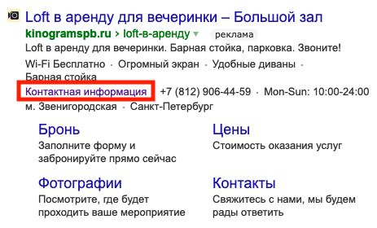
Turbo pages: This is an interesting analog version of AMP pages for advertising work. They are landing pages with a high loading speed which can be generated in Direct. They adapt to every device, are fast to open in all instances (better conversion rate) and easy to create, and can be published without developers and designers.
Direct has its own offline editor tool called Yandex Direct Commander or just Direct Commander. It’s not as user-friendly as Google Ads Editor, but still more useful for campaign management than bulk operations via Excel. Further, since 2019, it has a built-in keyword planner and you can easily create semantics for your campaigns instead of using the old Wordstat.Yandex platform. Unlike Wordstat, in Direct Commander, you can collect keywords with multiple queries at once, rather than via a single query (via web service, you can only receive up to 50 queries and you have to go to the next page for another 50 words and so on).
Let’s talk about audiences more. From our point of view, this topic is the most complicated aspect of Yandex. First of all, you need to know that an audience is not added simply for targeting. You have to go to Managing Impressions in Campaign Settings -> Bid adjustments -> Target audience -> Criteria settings. This is where the show starts!
You could create your audience based on Yandex.Metrica (goals and segments) and Yandex.Audiences. If you want to carry out remarketing (in Russia we call this “retargeting”), you need to define two targeting criteria via Yandex.Metrica options. Here is a simple example of how to carry out remarketing for visitors:
1. The first audience is the audience that was on your website (this will have been for a standard event with website visitors).
2. The second audience is exactly the same except for one thing: no one attended the event (i.e., they didn’t visit your website).
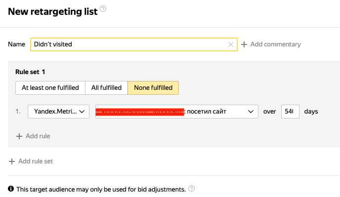
Next, make bid adjustments and that’s it!
Now, let’s see what Yandex.Audience can do for us.
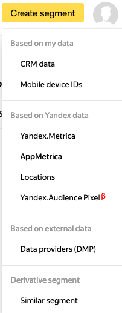
This tab can help you to build audiences, add pixel tracking and perform experiments.
As you can see, you can create various audiences:
1) A similar segment is always based on another audience source, so first of all you need to create a segment from, for example, Yandex.Metrica to create it.
2) A location audience is created via map manipulation and used for hyperlocal targeting.
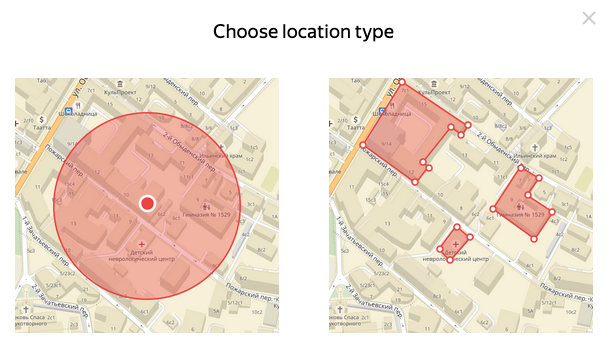
3) Data providers have both free and paid (CPM) audiences, if you need to target specific ones (good for prospecting display campaigns in the YAN).
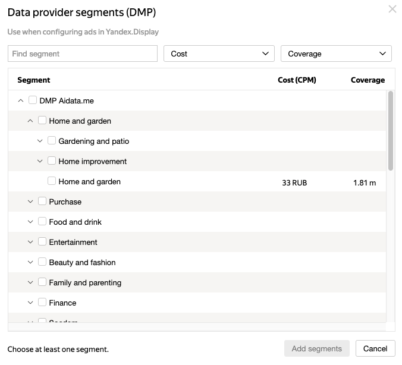
4) A Yandex.Audience pixel helps to target ads at those who saw your display or video ads, because this pixel is a tracking pixel which is installed at the ad group level in media campaigns (it’s like a beacon in Google Ads YouTube campaigns).
5) Others are obvious.
For those marketers who have at least 200 conversions/month, it is possible to maintain experiments in this tab. You have to make a request to a Yandex manager if you want to use this option.
The registration procedure for a new ad account is fairly straightforward. At first, you register in Yandex (for example, “lastclickcity”), then search for Direct and click on the yellow button “Get started”.
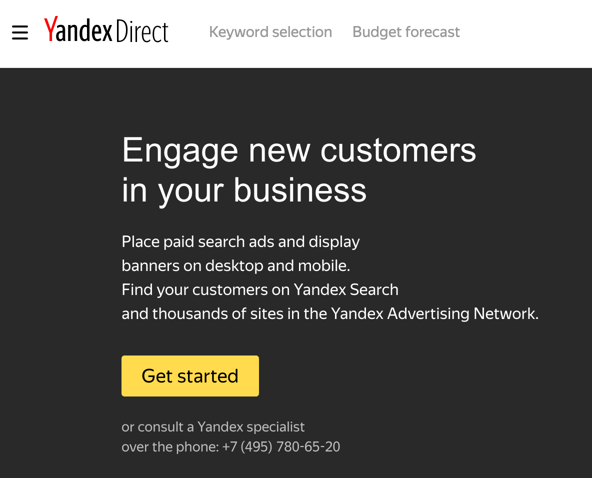
That’s it, you now have a Direct account.
But, if you want to create an account like Google MCC, namely, a Yandex Agency Account, you need to perform some magic. First of all, you have to log out and go to Yandex.Passport, register a new account (remember yours was “lastclickcity”). Secondly, you must go to the request page where you will find the registration form. Remember, you must not register with Direct first! The thing is that this page is in Russian only, but our instructions will help you out!
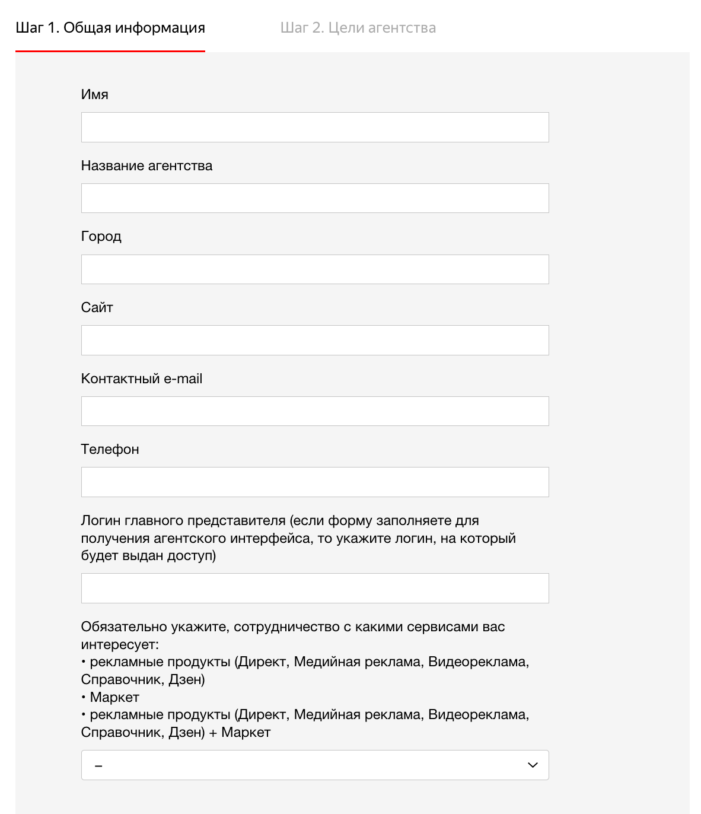
- Name
- Agency Name
- City
- Website
- Phone number
- Your login (which you registered in Yandex.Passport!)
- Services which you want to use (we recommend choosing “Рекламные продукты (Директ, Медийная реклама, Видеореклама, Справочник, Дзен) + Маркет”)
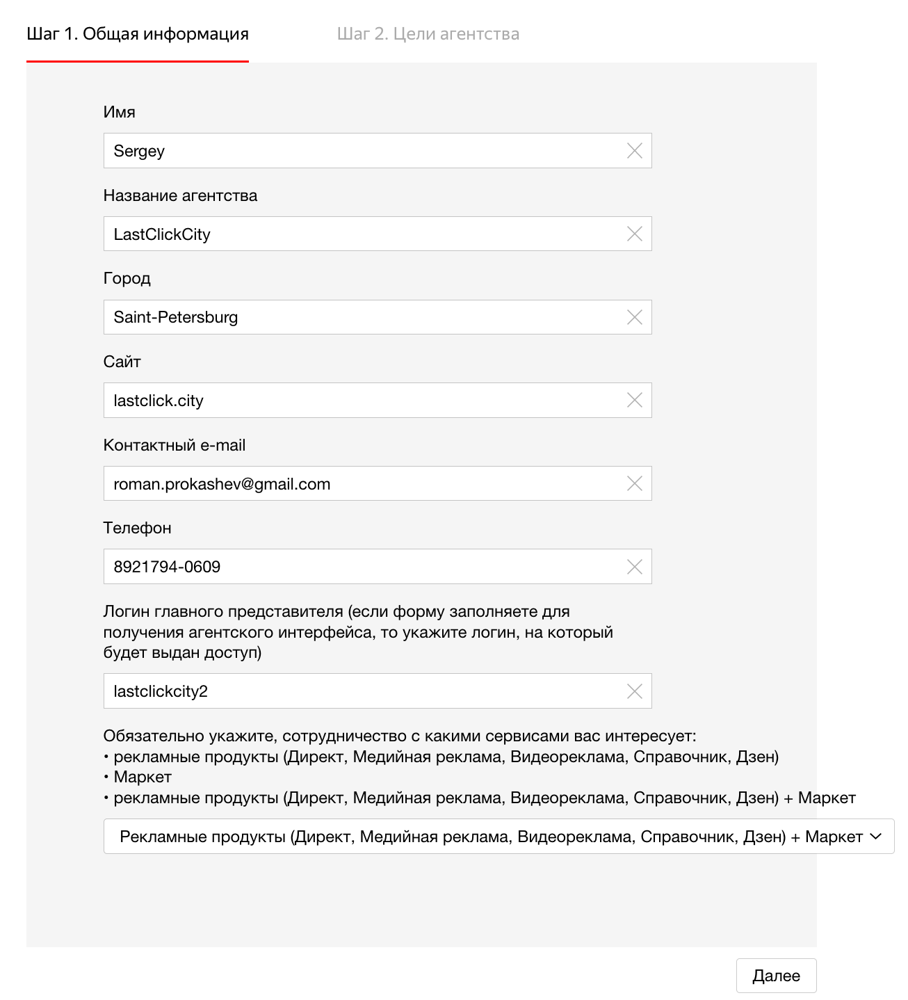
Then click “Далее” (“Next”) and you’ll move onto the second step:
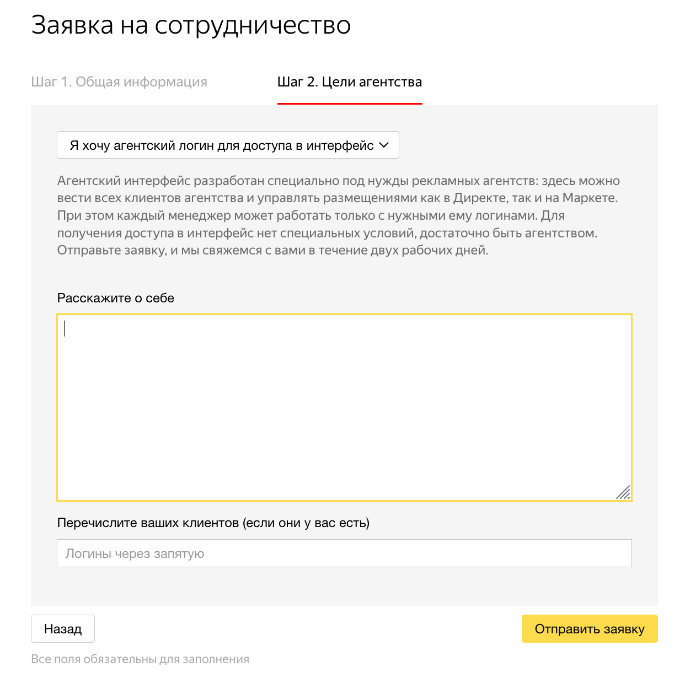
In the first field, chose “Я хочу агентский логин для доступа в интерфейс” (“I want an agency login to access the UI”), then write a few words about yourself, which you can do in English. The last field is about standard accounts which you already hold and want to link to Yandex MCC. After two business days, a Yandex manager will hopefully get in touch with you.
Now you have all the critical information you need to make a good start. Good luck with advertising on Direct!
LINKS